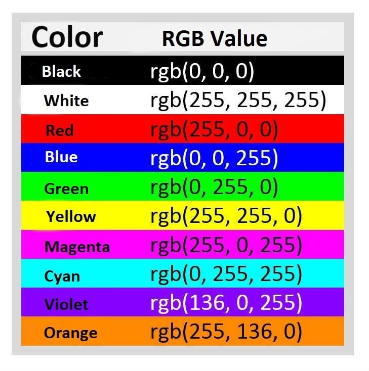

CSS Tutorials
CSS tutorial or CSS 3 tutorial provides basic and advanced concepts of CSS technology. Our CSS tutorial is developed for beginners and professionals. The major points of CSS are given below:
- CSS stands for Cascading Style Sheet. CSS is used to design HTML tags
- CSS is a widely used language on the web. HTML, CSS and JavaScript are used for web designing.
- CSS is a widely used language on the web. HTML, CSS and JavaScript are used for web designing. It helps the web designers to apply style on HTML tags.
What is CSS
CSS stands for Cascading Style Sheets. It is a style sheet language which is used to describe the look and formatting of a document written in markup language. It provides an additional feature to HTML. It is generally used with HTML to change the style of web pages and user interfaces. It can also be used with any kind of XML documents including plain XML, SVG and XUL.
CSS is used along with HTML and JavaScript in most websites to create user interfaces for web applications and user interfaces for many mobile applications.
What does CSS do
- You can add new looks to your old HTML Documents.
- You can Completely change the look of your website with only few changes in css code.
Why use CSS
these are the three major benifits Of CSS
Solve a big problem
Before CSS, tags like font, color, background style, element alignments, border and size had to be repeated on every web page. This was a very long process. For example: If you are developing a large website where fonts and color information are added on every single page, it will be become a long and expensive process. CSS was created to solve this problem. It was a W3C recommendationSaves a lot of Time
CSS style definitions are saved in external CSS files so it is possible to change the entire website by changing just one file.-
Provide more attributes
CSS style definitions are saved in external CSS files so it is possible to change the entire website by changing just one file
CSS Syntax
A CSS rule set contains a Selectors and Declaration block

Selectors:
Selector indicates the HTML element you want to style. It could be any tag like <title><h1> etc.
Declaration Block:
The declaration block can contain one or more declarations separated by a semicolon. For the above example, there are two declarations:
- color:yellow;
- font-size:11px;
Property:
A Property is a type of attribute of HTML element. It could be color, border etc.
Values:
Values are assigned to CSS properties. In the above example, value "yellow" is assigned to color property.
CSS Selectors
CSS selectors are used to select the content you want to style. Selectors are the part of CSS rule set. CSS selectors select HTML elements according to its id, class, type, attribute etc.
- element Selector
- Id Selector
- class Selector
- univesal Selector
- group Selector
Element Selector:
Id selectors:
Class Selectors:
Universal Selector:
group Selector
How to add CSS
CSS is added to HTML pages to format the document according to information in the style sheet. There are three ways to insert CSS in HTML documents.
- Inline CSS
- Internal CSS
- External CSS
Inline CSS:
Inline CSS is used to apply CSS on a single line or element.
For example:
Internal CSS:
Internal CSS is used to apply CSS on a single document or page. It can affect all the elements of the page. It is written inside the style tag within head section of html.
For example:
External CSS:
External CSS is used to apply CSS on multiple pages or all pages. Here, we write all the CSS code in a css file. Its extension must be .css for example style.css.
For example:
You need to link this style.css file to your html pages like this:
The link tag must be used inside head section of html.
CSS Comment
CSS comments are generally written to explain your code. It is very helpful for the users who reads your code so that they can easily understand the code.
Comments are ignored by browsers.
Comments are single or multiple lines statement and written within /*............*/ .
CSS Background
CSS background property is used to define the background effects on element. There are 5 CSS background properties that affects the HTML elements:
- Background-color
- Background-image
- Background-repeat
- Background-attachment
- Background-position
Background-color
The background-color property is used to specify the background color of the element.
You can set the background color like this:
Background-image
The background-image property specifies an image to use as the background of an element.
By default, the image is repeated so it covers the entire element.
Background-repeat
By default, the background-image property repeats an image both horizontally and vertically.
Some images should be repeated only horizontally or vertically, or they will look strange, like this:
Background-attachment
The background-attachment property specifies whether the background image should scroll or be fixed (will not scroll with the rest of the page):
Background-position
The background-position property is used to define the initial position of the background image. By default, the background image is placed on the top-left of the webpage
CSS Border
CSS border is a property used to define the border around an element in a web page. It allows you to control the border's style, color, and width. The border property can be applied to various HTML elements, such as divs, paragraphs, buttons, and more, to create visual separation and distinction between elements on a web page.
The border property is shorthand for specifying the following individual border properties:
Border-width
Specifies the thickness or width of the border. It can be set in various units like pixels (px), ems (em), or percentages (%). For example
Border-color
Specifies the color of the border. You can use color names, hexadecimal values, RGB, RGBA, HSL, or HSLA values to define the color. For example:
Border-radious
Sets the radius of the border corners to create rounded corners. It takes one or more values, which can be in pixels or percentages, to specify the radius for each corner individually or all corners at once. For example:
Border-style
The border-style property specifies what kind of border to display.
These are Some Styles:
- dotted - Defines a dotted border
- dashed - Defines a dashed border
- solid - Defines a solid border
- double - Defines a double border
- groove - Defines a 3D grooved border. The effect depends on the border-color value
- ridge - Defines a 3D ridged border. The effect depends on the border-color value
- none - Defines no border
- hidden - Defines a hidden border
CSS Height & Width
The CSS height and width properties are used to set the height and width of an element.
The CSS max-width property is used to set the maximum width of an element.
The height and width properties are used to set the height and width of an element.
The height and width properties do not include padding, borders, or margins. It sets the height/width of the area inside the padding, border, and margin of the element.
CSS Height And width values
The height and width properties may have the following values:
- auto - This is default. The browser calculates the height and width
- length - Defines the height/width in px, cm, etc.
- % - Defines the height/width in percent of the containing block
- initial - Sets the height/width to its default value
- inherit - The height/width will be inherited from its parent value
CSS Box Model
In CSS, the term "box model" is used when talking about design and layout.
The CSS box model is essentially a box that wraps around every HTML element. It consists of: margins, borders, padding, and the actual content. The image below illustrates the box model:

Here we conclusion that:
320px(width)
+ 20px (left + right padding)
+10px (left and right border)
+0px(left + right margin)
=350px
CSS Font
CSS (Cascading Style Sheets) provides a variety of properties for controlling the appearance and styling of text within HTML elements. These properties allow you to modify the font, size, color, spacing, alignment, decoration, and other visual aspects of text on a web page. Here's an explanation of some of the key CSS properties related to text:
font-family
This property specifies the font family for the text. You can define a specific font or a list of font choices, separated by commas. The browser will use the first available font in the list. For example:
font-size
This property sets the size of the text. You can specify the size in various units such as pixels (px), ems (em), percentages (%), or keywords like small, medium, large, etc. For example:
font-weight
It defines the thickness or weight of the text characters. Common values include normal, bold, bolder, and numeric values like 400 or 700 for more precise control. For example:
font-style
: This property specifies whether the text is displayed in a normal, italic, or oblique style. Common values include normal, italic, and oblique. For example:
color
It sets the color of the text. You can use color names, hexadecimal values, RGB, RGBA, HSL, or HSLA values to define the color. For example:
CSS Text(Text-Formatting)
This text is styled with some of the text formatting properties. The heading uses the text-align, text-transform, and color properties. The paragraph is indented, aligned, and the space between characters is specified.
text-color
The color property is used to set color of the text.The color is specified by:
- color name: like "red"
- Hex value: like "#f0000"
- rgb value: like rgb(255,0,0)"
text-align
This property controls the horizontal alignment of the text within its container. Common values include left, right, center, and justify. For example:
text-decoration
This property adds visual effects to the text, such as underlines, overlines, line-through, and blink. For example
text-shadow
The text-shadow property adds shadow to text.
In its simplest use, you only specify the horizontal shadow (2px) and the vertical shadow (2px):
CSS Links
Links can be styled with any CSS property (e.g. color, font-family, background, etc.).
n addition, links can be styled differently depending on what state they are in.
The Four links states are:
- a:link -normal,unvisited link
- a:visited -a link the user has visited
- a:hover -a link when the user mouses over it
- a:a -link the moment it is clicked
CSS Lists
There are various CSS properties that can be used to control lists. Lists can be classified as ordered lists and unordered lists. In ordered lists, marking of the list items is with alphabet and numbers, whereas in unordered lists, the list items are marked using bullets
there are three types o list-style
- Order list
- Unorder list
- Description list
- Set the distance between the text and the marker in the list
- Specify an image for the marker instead of using the number or bullet point.
- Control the marker appearance and shape.
- Place the marker outside or inside the box that contains the list items.
- Set the background colors to list items and lists.
list-style-type
This property is responsible for controlling the appearance and shape of the marker.
list-style-image
It sets an image for the marker instead of the number or a bullet point.
list-style-position
It specifies the position of the marker.
list-style
It is the shorthand property of the above properties
marker-offset
It is used to specify the distance between the text and the marker. It is unsupported in IE6 or Netscape 7.
CSS Margin
The CSS margin properties are used to create space around elements, outside of any defined borders.
With CSS, you have full control over the margins. There are properties for setting the margin for each side of an element (top, right, bottom, and left).
margin - individual Sides
CSS has Properties for Specifying the margin for each side of an element:- margin-top
- margin-right
- margin-bottom
- margin-lefyt
All the margin can have following values:
- auto - the browser calculates the margi
- length - specifies a margin in px, pt, cm, etc.
- % - specifies a margin in % of the width of the containing element
- inherit - specifies that the margin should be inherited from the parent element
CSS Padding
The CSS padding properties are used to generate space around an element's content, inside of any defined borders. With CSS, you have full control over the padding. There are properties for setting the padding for each side of an element (top, right, bottom, and left).
padding - Indivisuals sides
CSS has Properties for specifying the paddding for each side of an elements:- padding-top
- padding-right
- padding-right
- padding-bottom
All the padding properties can have the following values:
- length - specifies a padding in px, pt, cm, etc.
- % - specifies a padding in % of the width of the containing element
- inherit - specifies that the padding should be inherited from the parent element
CSS Position
The position property specifies the type of positioning method used for an element.
There are five different position values:
- static
- relative
- fixed
- absolute
- sticky
Elements are then positioned using the top, bottom, left, and right properties. However, these properties will not work unless the position property is set first. They also work differently depending on the position value.
brposition:static
HTML elements are positioned static by default.
Static positioned elements are not affected by the top, bottom, left, and right properties.
An element with position: static; is not positioned in any special way; it is always positioned according to the normal flow of the page:
position:relative
An element with position: relative; is positioned relative to its normal position. Setting the top, right, bottom, and left properties of a relatively-positioned element will cause it to be adjusted away from its normal position. Other content will not be adjusted to fit into any gap left by the element.
position:absolute
An element with position: absolute; is positioned relative to the nearest positioned ancestor (instead of positioned relative to the viewport, like fixed).
However; if an absolute positioned element has no positioned ancestors, it uses the document body, and moves along with page scrolling.
Note: Absolute positioned elements are removed from the normal flow, and can overlap elements.
position:fixed
An element with position: fixed; is positioned relative to the viewport, which means it always stays in the same place even if the page is scrolled. The top, right, bottom, and left properties are used to position the element. A fixed element does not leave a gap in the page where it would normally have been located. Notice the fixed element in the lower-right corner of the page.
position:Sticky
An element with position: sticky; is positioned based on the user's scroll position. A sticky element toggles between relative and fixed, depending on the scroll position. It is positioned relative until a given offset position is met in the viewport - then it "sticks" in place (like position:fixed).
For More Details of Sticky Click Here
CSS Units
CSS has several different units for expressing a length.
Many CSS properties take "length" values, such as width, margin, padding, font-size, etc.
Length is a number followed by a length unit, such as 10px, 2em, etc.
Absolute Lenghts
| Unit | Description |
|---|---|
| cm | centimeter |
| mm | milimeter |
| in | inches(1in = 96px) |
| px | Pixel |
| pt | Points(1pt=1/72 of in) |
| pc | picas(1pc=12pt) |
Relative Leangths
| Unit | Description |
|---|---|
| em | Relative to the font-size of the element (2em means 2 times the size of the current font) |
| ex | Relative to the x-height of the current font (rarely used) |
| rem | Relative to font-size of the root element. |
| vw | Relative to 1% of the width of the viewport* |
| vh | Relative to 1% of the height of the viewport* |
| % | Relative to the parent element |
Inline element and Block element
We can apply CSS in a single element by inline CSS technique.
The inline CSS is also a method to insert style sheets in HTML document. This method mitigates some advantages of style sheets so it is advised to use this method sparingly.
If you want to use inline CSS, you should use the style attribute to the relevant tag.
Disadvatanges Of Inline CSS
- You cannot use quotations within inline CSS. If you use quotations the browser will interpret this as an end of your style value.
- These styles cannot be reused anywhere else.
- These styles are tough to be edited because they are not stored at a single place.
- It is not possible to style pseudo-codes and pseudo-classes with inline CSS.
- Inline CSS does not provide browser cache advantages.
The elements that begin on a new line are known as block elements. A block element takes up the full width of the content. Unlike inline, there exists a top and bottom margin for these elements. Block-level elements may only appear inside the body tag. Block-level elements create a larger structure than inline elements.

CSS Z-Index
When elements are positioned, they can overlap other elements.
The z-index property specifies the stack order of an element (which element should be placed in front of, or behind, the others).
Note: z-index only works on positioned elements (position: absolute, position: relative, position: fixed, or position: sticky) and flex items (elements that are direct children of display: flex elements).
CSS pseudo-classes
A pseudo-class can be defined as a keyword which is combined to a selector that defines the special state of the selected elements. It is added to the selector for adding an effect to the existing elements based on their states. For example, The ":hover" is used for adding special effects to an element when the user moves the cursor over the element.
| pseudo class | description |
|---|---|
| :active | IIt is used to add style to an active element. |
| :hover | It adds special effects to an element when the user moves the mouse pointer over the element. |
| :link | It adds style to the unvisited link. |
| :visited | It adds style to a visited link. |
| :lang | It is used to define a language to use in a specified element. |
| :Focous | It selects the element which is focused by the user currently. |
| :first-child | It adds special effects to an element, which is the first child of another element. |
CSS Color
RGBA color
RGBA color values are an extension of RGB color values with an alpha channel - which specifies the opacity for a color.
An RGBA color value is specified with: rgba(red, green, blue, alpha). The alpha parameter is a number between 0.0 (fully transparent) and 1.0 (fully opaque).
HSL color
HSL stands for Hue, Saturation and Lightness.
An HSL color value is specified with: hsl(hue, saturation, lightness).
1)Hue is a degree on the color wheel (from 0 to 360):
0 (or 360) is red
120 is greenbr
240 is blue
2)Saturation is a percentage value: 100% is the full color.
3)Lightness is also a percentage; 0% is dark (black) and 100% is white.

CSS Flexbox
CSS3 Flexible boxes also known as CSS Flexbox, is a new layout mode in CSS3.
The CSS3 flexbox is used to make the elements behave predictably when they are used with different screen sizes and different display devices. It provides a more efficient way to layout, align and distribute space among items in the container.
It is mainly used to make CSS3 capable to change its item?s width and height to best fit for all available spaces. It is preferred over block model.
The CSS3 flexbox contains flex containers and flex item
Flex container
The flex container specifies the properties of the parent. It is declared by setting the display property of an element to either flex or inline-flex.
Flex Items
The flex items specify properties of the children. There may be one or more flex items inside a flex container.
Flexbox specifies how flex items are set inside a flex container. It sets the flex items inside a flex container along a flex line. By default, there is only one flex line per flex container. Everything outside a flex container and inside a flex item is considered as usual.
Let's take an example to show three flex items within a flex container. By default, they are set along the horizontal flex line, from left to right
| property | Description |
|---|---|
| display | it is used to specify the type of box used for an html element. |
| flex-direction | it is used to specify the direction of the flexible items inside a flex container. |
| Justify-Content | it is used to align the flex items horizontally when the items do not use all available space on the main-axis. |
| align-items | it is used to align the flex items vertically when the items do not use all available space on the cross-axis. |
| flex-wrap | it specifies whether the flex items should wrap or not, if there is not enough room for them on one flex line |
| align-content | it is used to modify the behavior of the flex-wrap property. it is similar to align-items, but instead of aligning flex items, it aligns flex lines. |
| flex-flow | it specifies a shorthand property for flex-direction and flex-wrap. |
| order | it specifies the order of a flexible item relative to the rest of the flex items inside the same container. |
| align-self | it is used on flex items. it overrides the container's align-items property. |
| flex | it specifies the length of a flex item, relative to the rest of the flex items inside the same container. |
CSS Grid
A grid can be defined as an intersecting set of horizontal lines and vertical lines. CSS Grid layout divides a page into major regions. It defines the relationship between the parts of a control built from HTML primitives in terms of layer, position, and size. Grid property offers a grid-based layout system having rows and columns. It makes the designing of web pages easy without positioning and floating
Similar to the table, it enables a user to align the elements into rows and columns. But compare to tables, it is easy to design layout with the CSS grid. We can define columns and rows on the grid by using grid-template-rows and grid-template-columns properties.
The CSS grid property is supported in browsers such as Google Chrome, Internet Explorer, Firefox, Safari, and Opera.
Grid Container
We can define the grid container by setting the display property to grid or inline-grid on an element.
Grid container contains grid items that are placed inside rows and columns.
Lets see Some shorthand Properties
- grid-template-columns: It is used to specify the size of the columns.
- grid-template-rows: It is used to specify the row size.
- grid-template-areas: It is used to specify the grid layout by using the named items.
- grid-auto-rows: It is used to specify the automatic size of the rows.
- grid-auto-columns: It is used to specify the automatic size of the columns.
- grid-auto-flow: It is used to specify how to place auto-placed items and the automatic row size.
The Justify-Content Property
- space evenly: It provides equal space in between or around the columns.
- space around: It provides equal space around the columns.
- space between: It gives an equal amount of space between the columns.
- center: It is used to align the grid in the middle of the container..
- start: It is used to align the grid at the beginning of the container.
- end: It is used to align the grid at the end of the container.